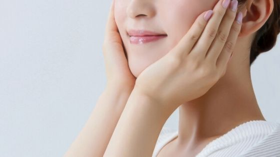
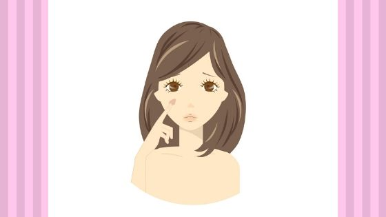
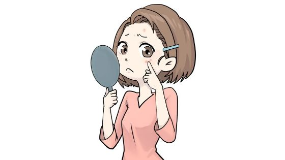
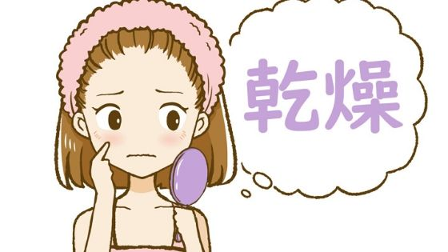

NULC 薬用スリープロテクトジェル（オールインワンジェル）の効果

スリープロテクトジェルを使うとどう変わるの？
スリープロテクトジェルを使うメリットについてですね。こちらになります。
- 肌がぷるぷる・しっとり・もちもちに
- しみ、そばかすを防ぐ
- ニキビを防ぐ
- 乾燥してできるしわを目立たなくして若くみえる
- 効果：まとめ
スリープロテクトジェルを使うメリット
このサイトではあえて成分名を表示していません。
スキンケア上級者の方でしたら成分をみただけで何に効果あるかわかる人もいますよね。
成分名を表示していない理由はこのサイトを見に来てくれた方は、成分が知りたいのではなくその成分を使ったらどういう効果が実感出来るのかを知りたいのでは？と思ったからです。
また、スキンケアの知識がまだあまりない方にも分かりやすく説明したいというのもあります。
肌がぷるぷる・しっとり・もちもちに
スキンケアと言えばまずは保湿力。
ぷるぷる。しっとり。つやつや。もちもち。語彙力がなくて雑ですがこんな感じ！
保湿力は申し分ないです。乾燥しやすい冬でも使えます。
ただ、保湿力だけを見るのであれば、他のスキンケア用品でも同じくらいの性能のは探せば見つかるかも。
個人的な意見ですが中の上から上あたりの評価です。
じゃあこのスリープロテクトジェル一番のメリットは？気になりますよね。
しみ、そばかすを防ぐ
シミやそばかすの防止に有効な成分が含まれているため、シミとそばかすができにくくなります。
肌が綺麗な状態で保たれることで実際の年齢より若く見られるかも。
「肌がきれいですね」と言われるのってとっても嬉しいですもんね。
また、このスリープロテクトジェルは化粧品であり「薬用」なんです。
- 厚生労働省が許可した有効な成分が入っている
- 厚生労働省に６か月以上かけて審査されている
- 効果があることが実証されている
この「薬用」こそがほかのジェルとの違い大きなメリットなわけです。
朝、夜、風呂上がり？塗るタイミングはいつ？
リンクニキビを防ぐ
化粧品ショップのお姉さんに「夜遅くにご飯食べると翌朝ニキビ出来てたりしませんかー？あれね、消化しきれなかった余計な脂質が原因で出来てるんです。お顔は第二の肛門なんですよ〜！」と言われたんだけど余りのパワーワードに一人では受け止めきれなかったので皆さんと共有します。
— ニゴウ (@GHEERITAN) August 22, 2016
お顔は第二の肛門！？
衝撃的なワードが飛び出していますね。
夜の間食ひかえよ・・
そんな顔にできるニキビの悩みにも「薬用」の成分により防ぐ効果があります。
この成分は敏感肌や炎症に対しての有効成分としてシャンプーや育毛剤、歯磨き用品などに使われています。
プチっとできた赤色のできものに悩まされる日々とおさらば出来るかもと考えると、気分が晴れ晴れしますよね。
肌荒れ
あせも
ひび
あかぎれ
乾燥してできるしわを目立たなくして若くみえる
実際の年齢より若くみられたい。きれい、かわいいって言ってもらいたい。
何歳になっても変わらない願いですよね。
乾燥することによって顔に出来てしまう「しわ」の対策していますか？
このしわは思った以上にやっかいです。
・老けて見える
・疲れていて暗い顔に見える
・きつい性格にみえる
・いらいらしているように見える
こういったデメリットが顔に出てしまうのです。
そうならないためにもしっかりと保湿して目立たなくする。
これがスリープロテクトジェルの４つ目の効果です。
効果：まとめ
・肌がぷるぷる・しっとり・もちもちに
・しみ、そばかすを防ぐ
・ニキビ、肌荒れの予防に
・乾燥してできるしわを目立たなくする
スリープロテクトジェルを使った時の効果。スキンケア意識の高いあなたに嬉しいものが多かったのではないでしょうか？
「薬用」の化粧品は「薬用でない」化粧品に比べ、有効成分が含まれているのが大きな違いだったんですね。
- NULC 薬用スリープロテクトジェル（オールインワンジェル）トップ
- NULC 薬用スリープロテクトジェル（オールインワンジェル）の効果
- NULC 薬用スリープロテクトジェル（オールインワンジェル）の使い方
- NULC 薬用スリープロテクトジェル（オールインワンジェル）の使うタイミング
- NULC 薬用スリープロテクトジェル（オールインワンジェル）は乾燥肌でも大丈夫？
- NULC 薬用スリープロテクトジェル（オールインワンジェル）の評価・評判・口コミ
- NULC 薬用スリープロテクトジェル（オールインワンジェル）の値段は安い？
- NULC 薬用スリープロテクトジェル（オールインワンジェル）と人気のジェルを比較
- NULC 薬用スリープロテクトジェル（オールインワンジェル）は子供にも使える？
- NULC 薬用スリープロテクトジェル（オールインワンジェル）は無料でお試しはできる？
- NULC 薬用スリープロテクトジェル（オールインワンジェル）の会社ナルク（NULC）とは？